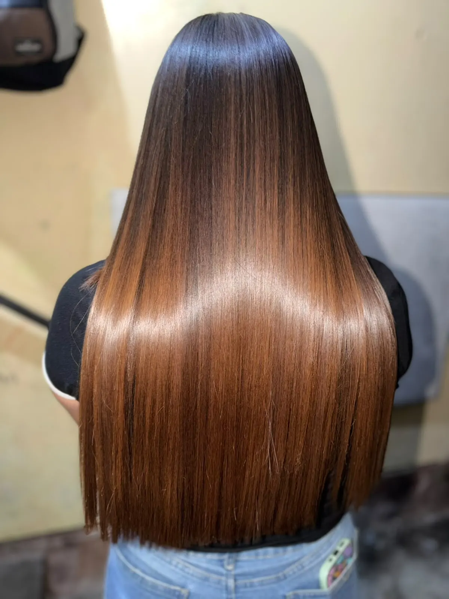
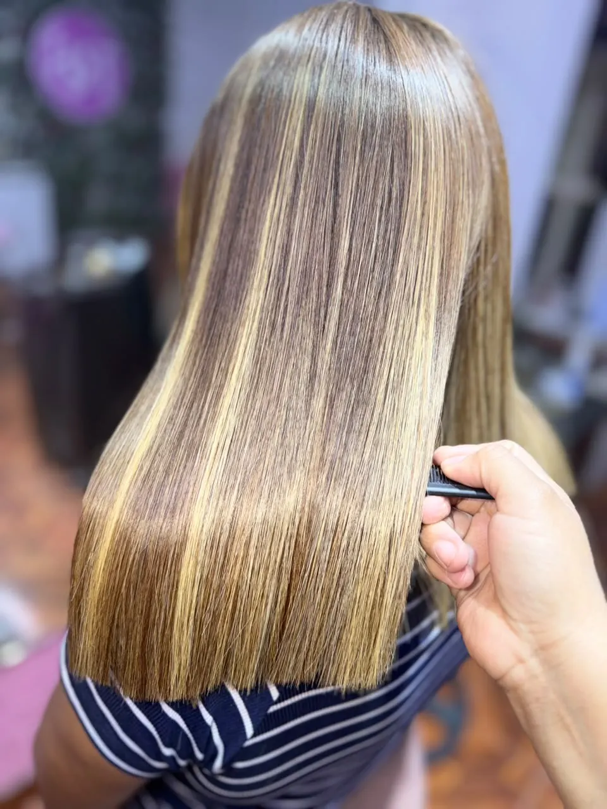
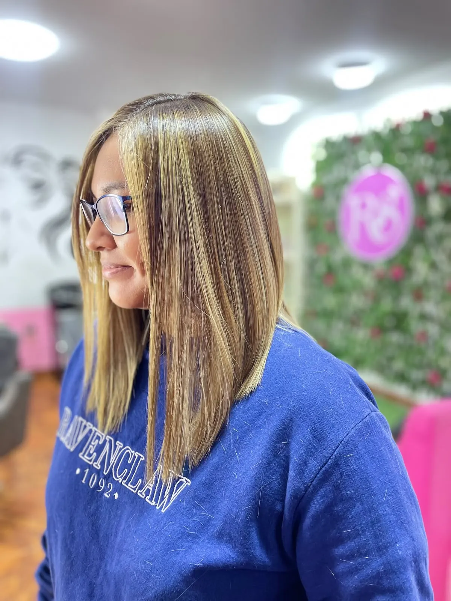
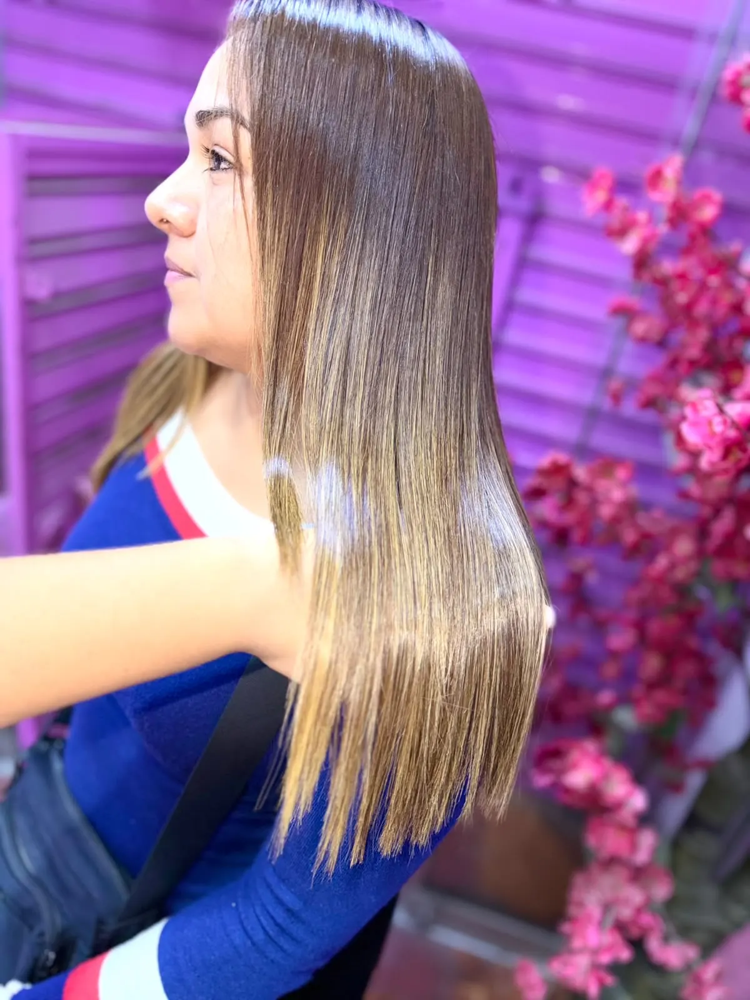
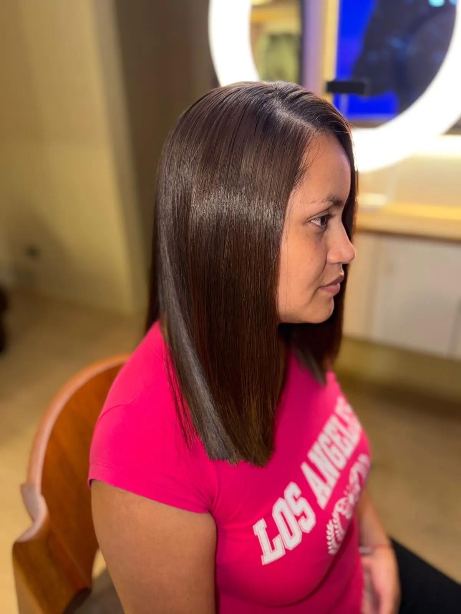

Alisado KeratinPlex
El liso con brillo para cabellos tinturados o maltratados: al terminar se ve igual que un Nanoplex.
- Precio referencial
- Desde S/350
- Duración
- Entre 4 y 5 meses*
*Según la condición de tu cabello y sus cuidados. El precio final depende del largo, el volumen y la evaluación de tu cabello.

¿Es KeratinPlex para ti?
Si tu cabello tiene tinte, mechas, decoloración o está maltratado, este es tu alisado.
Visualmente el resultado es igual al de Nanoplex: liso, con brillo y sin frizz. La diferencia es que KeratinPlex está pensado para cabellos que ya pasaron por procesos químicos o necesitan más cuidado.
Reina lo confirma con el diagnóstico y la prueba de mechón antes de empezar.
Cabello liso
El mismo liso que ves en Nanoplex al terminar.
Brillo espejo
Aunque tu cabello tenga color o mechas.
Sin frizz
El cabello se ve más ordenado y manejable.
Más fácil de peinar
Menos tiempo y menos esfuerzo para arreglarte.
A tu medida
El resultado se ajusta a tu diagnóstico.

Precio de KeratinPlex
Desde S/350
El precio habitual ronda los S/380 y puede variar según el largo y el volumen. Duración referencial: entre 4 y 5 meses, según tu cabello y sus cuidados. Para separar, adelanto de S/50 descontado del servicio.
Cotiza tu KeratinPlex por WhatsApp (abre WhatsApp)Resultados KeratinPlex
Cabellos tinturados o maltratados de clientas reales, compartidos con su autorización. El resultado varía según cada cabello.
Ver todos los resultados-

KeratinPlexCon mechas
-

KeratinPlexPuntas aclaradas
-

KeratinPlexCon tinte
Cómo es el proceso
Revisa las condiciones de reserva antes de separar.
Escribes por WhatsApp
Envías una foto de tu cabello con luz natural y le cuentas a Reina su largo, si está teñido o decolorado, qué tratamientos te hiciste antes y en qué distrito quieres atenderte.
Reina evalúa y te cotiza
Con esa información te recomienda el tratamiento adecuado para tu cabello y te da el precio final.
Separas tu cita
Eliges la fecha y separas con un adelanto de S/50, que se descuenta del precio del servicio.
El día de tu cita
Reina revisa tu cabello, hace la prueba de mechón y aplica KeratinPlex con el enfoque que tu cabello necesita, explicándote cada paso.
Cuidados en casa
Te vas con recomendaciones concretas para mantener el resultado, y puedes escribirle a Reina si te surge una duda.
Lo que KeratinPlex no es
No es un tratamiento médico ni una reconstrucción garantizada del cabello.
Es un alisado orientado a controlar el frizz, dar suavidad y mejorar la apariencia de tu cabello. Preferimos decirlo claro para que sepas exactamente qué esperar.
KeratinPlex o Nanoplex
Al terminar se ven iguales: liso, brillo y sin frizz. Lo que cambia es el cabello para el que está pensado cada uno y cuánto dura.
| Nanoplex | KeratinPlex | |
|---|---|---|
| Pensado para | Cabellos que cumplen los requisitos mínimos de cuidado | Cabellos tinturados o maltratados |
| Resultado al terminar | Liso, brillo espejo y sin frizz | Liso, brillo espejo y sin frizz |
| Duración referencial | Hasta 12 meses | Entre 4 y 5 meses |
| Precio desde | S/450 | S/350 |
La duración depende de la condición de tu cabello, sus características y tus cuidados. El precio final depende del largo, el volumen y la evaluación.
Lo que cuentan las clientas
Comentarios públicos de clientas en TikTok.
Ver también las reseñas en Google“No sabes cómo extraño tus trabajos, por lo hermoso que quedaba mi cabello. Espero ir pronto a Perú y que me atiendas como siempre. Así que ya saben: ReinaSoft 100% recomendadísimo.”
-
“La mejor Reina, 100% recomendado. Los resultados hablan de tu trabajo.”
-
“Súper recomendado, has hecho milagros con mi cabello, amiga.”
-
“Les recomiendo una excelente estilista. Todos los tratamientos que me ha hecho quedaron hermosos. Su trabajo y el trato, muy bien.”
-
“Muy buena la mascarilla y los tratamientos que me haces. Estoy contenta con cómo me dejas el cabello. Gracias, Reina.”
Preguntas sobre KeratinPlex
¿Para qué tipo de cabello es KeratinPlex?
Para cabellos tinturados o maltratados: con tinte, mechas, decoloración o procesos anteriores. Reina lo confirma después del diagnóstico y la prueba de mechón.
¿Se ve diferente a Nanoplex?
No. Al momento de hacerlo, el resultado visual es igual: liso, con brillo y sin frizz. Cambian el tipo de cabello para el que está pensado y la duración.
¿Cuánto dura KeratinPlex?
Entre cuatro y cinco meses, según las características de tu cabello y los cuidados que tengas.
¿Cuánto cuesta?
Desde S/350. El precio habitual ronda los S/380 y puede variar según el largo y el volumen. Reina te da el precio exacto por WhatsApp.
¿KeratinPlex repara el cabello dañado?
No es un tratamiento médico ni una reconstrucción garantizada. Su objetivo es controlar el frizz, dar suavidad y mejorar la apariencia del cabello, con un resultado ajustado a tu diagnóstico.
¿Cómo sé si me conviene más Nanoplex o KeratinPlex?
Si tu cabello está tinturado o maltratado, normalmente te corresponde KeratinPlex; si cumple los requisitos mínimos de cuidado, Nanoplex. Envía una foto y cuéntale a Reina qué tratamientos te hiciste antes para confirmarlo.
¿Tu cabello tiene tinte o mechas?
Envía una foto a Reina y cuéntale qué tratamientos te hiciste antes para cotizar tu KeratinPlex.